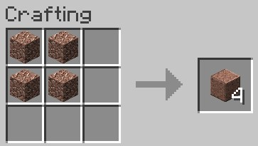
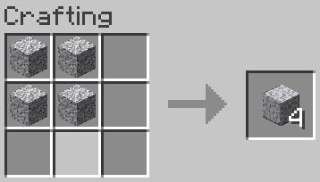
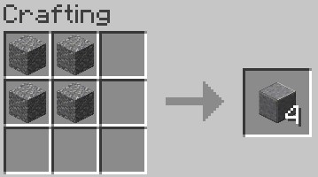

| You can get stone by putting cobblestone in furnace or by mining it by a silk-touch pickaxe |
Granite is found in caves or under ground. You can get granite by mining it with a pickaxe |
You can craft this item:  |
Diorite is found in caves or under ground. You can get granite by mining it with a pickaxe |
You can craft this item:  |
| |
You can craft this item:  |